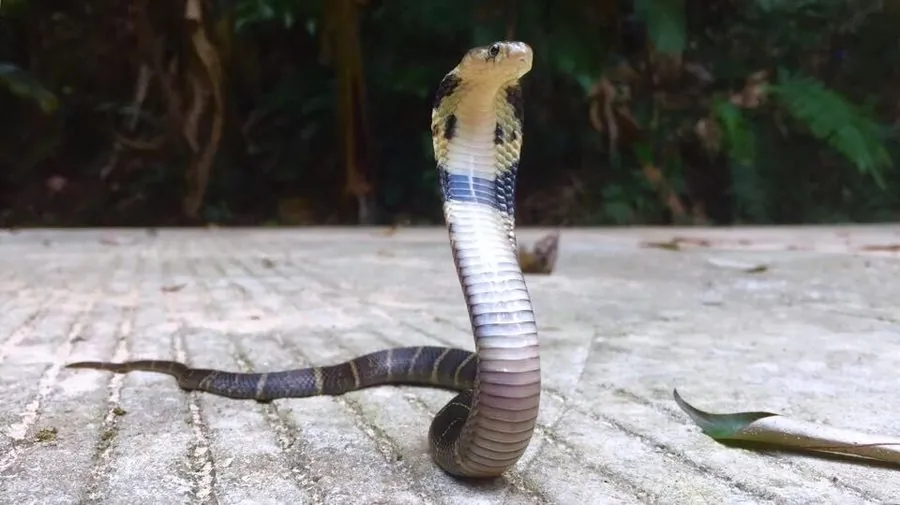

爬行动物 · 动物界
舟山眼镜蛇 Naja atra

中国南方常见的剧毒蛇，受惊时颈褶膨大呈扁平的“眼镜”状，毒液含神经毒素，已被列为国家二级保护动物。
- 分类
- 门脊索动物门纲爬行纲目有鳞目科眼镜蛇科属眼镜蛇属
- 栖息环境
- 农田、灌丛、林缘、溪边与村落附近
- 地理分布
- 中国长江以南多省区及越南等东南亚国家
- 保护级别
- IUCN 易危（VU）；中国国家二级保护动物
物种志
舟山眼镜蛇体长 1.2–2 米，头部呈椭圆形，颈部的颈褶可以膨大展开成扁平状，背面呈黑色、黑褐色或暗褐色，颈部背面常有一道白色或淡黄色的横带，有的个体呈“眼镜”状斑纹，腹部淡黄。它的毒牙短而后沟，毒液以神经毒素为主。
它分布于中国南方以及越南等地，栖息于农田、灌丛、林缘和村落附近，多在白天活动，捕食鼠类、蛙类、鸟类、鱼及其他蛇类，也吃蛇卵。每年 5–8 月繁殖，雌蛇产卵 6–20 枚，孵化期约 45–60 天。舟山眼镜蛇是中国南方重要的毒蛇之一，被咬后可能出现局部坏死和呼吸麻痹，须立即就医；因大量捕捉和栖息地减少，其野外数量下降，已被列为国家二级保护动物。
形态与习性
- 食性鼠类、蛙类、鸟类、鱼及其他蛇类
- 体长1.2–2 m
- 体重约 0.5–1.5 kg
- 寿命约 15–20 年
- 繁殖卵生，每窝 6–20 枚，孵化 45–60 天
- 活动节律昼行性，受惊时膨起颈褶
- 毒性神经毒素为主，被咬须立即就医
趣味知识
- 舟山眼镜蛇受惊时会膨大颈褶，颈部背面的浅色横带形似一副眼镜。
- 它主要取食鼠类，对控制农田鼠害有一定作用。
- 舟山眼镜蛇已被列为国家二级保护动物，非法捕捉和买卖属违法行为。